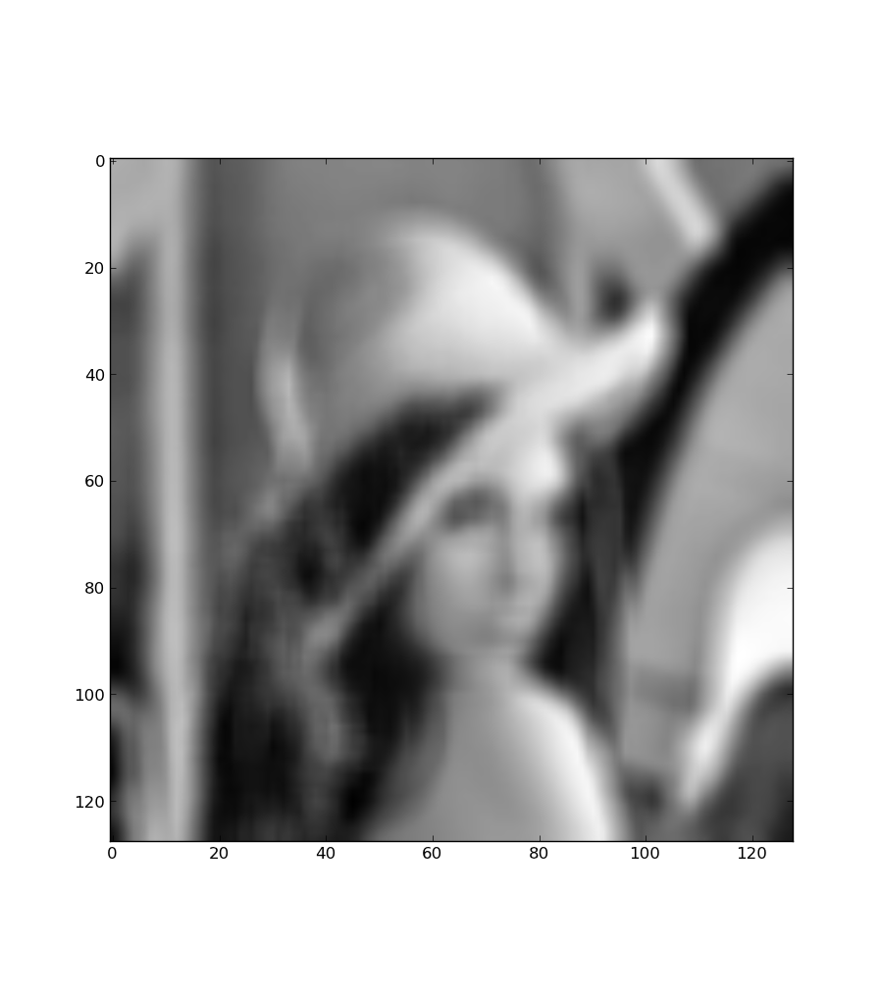

The following exemple can be found in the exemples directory . It illustrates the performances of an unsupervised algorithm derived in Seeger et al. 2010 . The algorithm itself is coded in iterative/dli.py
For this exemple Lena has been convolved with an uniform kernel of ones of size 7 times 7. The original image has been downsampled by a factor 4 for speed. In addition, there is noise white noise added to the date too. {% highlight python %} #!/usr/bin/env python import numpy as np import scipy import linear_operators as lo # Load the infamous Lena image from scipy im = scipy.lena() im = im[::4, ::4] # Generate a convolution model with a 7x7 uniform kernel model = lo.convolve_ndimage(im.shape, np.ones((7, 7))) # convolve the original image data = model * im.ravel() # add noise to the convolved data data += 1e0 * np.random.randn(*data.shape) # define smoothness prior {% endhighlight %} The data looks very blurred :
Amazingly enough, the algorithm manages to get back most of the information.The algorithm used for this exemple is quite complex but can be coded by plugging together off-the-shelf algorithms for sparse estimation and covariance approximation. As you can see, there is no ringing effect on the estimated image. This is a benefit from the underlying statistical model of the algorithm : automatic relevence determination, which is way better than the quadratic model for image deconvolution as it is closer to the true statistics of natural images.